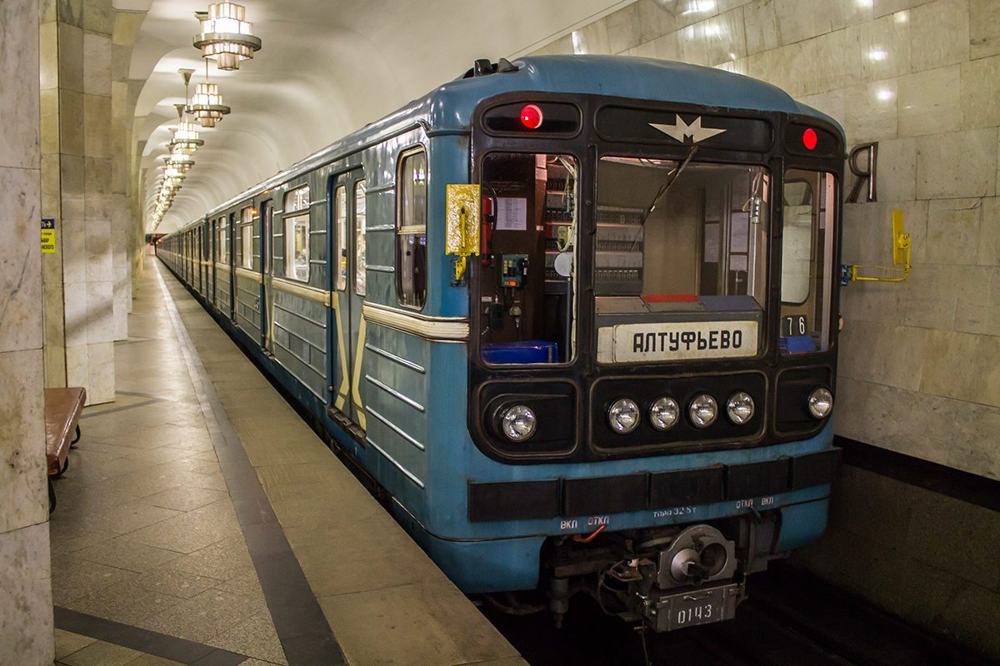
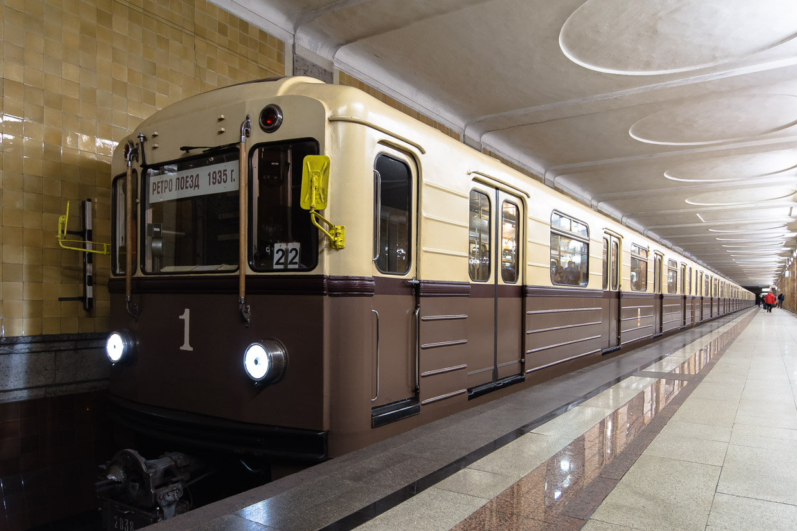

| • 81-717/714 | |
|  | В Москву поставлено 414 головных и 1055 промежуточных вагонов, выпускавшихся в 1976—1988 годах Эксплуатация с пассажирами начата с 1978 года. Вагоны обслуживают Замоскворецкую и Калужско-Рижскую линии. |
| • 81-717.5/714.5 | |
 |
От базовой модели отличаются усовершенствованным оборудованием. В Москву поставлено 199 головных и 552 промежуточных вагона, выпускавшихся в 1987—1995 годах. Вагоны обслуживают Замоскворецкую, Калужско-Рижскую и Люблинско-Дмитровскую линии. |
| • 81-717.5М/714.5М | |
 |
Вагоны отличаются от предыдущих модификаций очередным усовершенствованием оборудования и конструкцией фар на лобовой части — вместо двух парных фар вблизи края установлены одиночные, а по центру между ними размещены ещё четыре. Впоследствии так начали модернизироваться и ранее выпущенные вагоны. В Москву поставлено 284 головных и 816 промежуточных вагона, выпускавшихся в 1993—2010 годах. Вагоны обслуживают Сокольническую, Замоскворецкую и Люблинско-Дмитровскую линии. 3 вагона эксплуатируются в составе именного поезда «Олег Табаков» на Калужско-Рижской линии. |
| • 81-717.6К/714.6К и 81-717.6/714.6 | |
 |
Вагоны являются результатом глубокой модернизации вагонов 81-717/714 и отличаются новой лобовой маской головных вагонов выпуклой скруглённой формы с аварийной дверью, увеличенной площадью кабины машиниста, наличием принудительной вентиляции и обновлённым интерьером кабины и салона. Поезда имеют трёхцветную окраску: светло-серый верх, тёмно-серый низ и голубая полоса-разделитель[39]. Первый опытный состав был модернизирован в 2007 году из вагонов типа 81-717.5/714.5 и получил обозначение 81-717.6К/714.6К (буква К указывает на проведение капитальной модернизации), после испытаний в ТЧ-2 «Сокол» состав был передан в ТЧ-12 «Новогиреево» и работал на Калининской линии с 2009 по 2012 год, после чего был отстранён от эксплуатации с пассажирами. Впоследствии все вагоны данного типа для Москвы были выпущены заводом «Метровагонмаш» в 2009 и 2011 году как изначально новые, получая обозначение 81-717.6/714.6 без буквы К. Всего для Москвы было изготовлено 22 головных и 66 промежуточных вагонов, сформированных в 11 восьмивагонных составов. Составы из серийных вагонов приписаны к ТЧ-15 «Печатники» и обслуживают Люблинско-Дмитровскую линию. |
| • 81-717.5А/714.5А (Ретро-поезд «Сокольники»). | |
|  | Вагоны этого типа стилизованы под первый поезд Московского метрополитена из вагонов типа А, и имеют близкую к ним форму лобовую части (без торцевой двери) и интерьер салона. Единственный семивагонный поезд был изготовлен на заводе «Метровагонмаш» в 2010 году. Имеет двухцветную бежево-коричневую кофейную окраску, близкую к окраске вагонов типа А. Приписан к ТЧ-1 «Северное» и эксплуатируется на Сокольнической линии. |
сделали Лядов Тимофей и Никитин Станислав